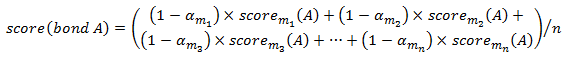

|
This combination strategy allows users to weight the scores obtained by
each disulfide bond determination method differently. This strategy is specially powerful when the
bonding patterns found are conflicting or if a particular method is known to perform poorly
due to a specific motif (i.e.: poor fragmentation in tandem MS/MS analysis,
or when a method is known to perform poorly due to a specific amino acid sequence or bonding
arrangement).
While using this strategy, an expert user may assign confidence (reliability) values to the bonding scores obtained by the different methods used. These confidence values are then multiplied by their respective bonding pattern score. By default, MS2DB++ assigns maximum confidence (alfa = 1) to all scores. In this strategy, the score of a bonding pattern A is calculated as the average score of all bonding scores A obtained by the different disulfide bond determination methods, multiplied by their respective confidence factor alfa. The formula is presented below. |
|  |